3D点云特征提取笔记
下面的papers都是有关3D点云特征提取的，将提取到的特征用于分类或分割任务。
经历了从深度学习+手工设计方法到几乎完全深度学习的转变。
本文完整的PDF版本你可以从这里下载。
PointNet 👍
CVPR2017《PointNet: Deep Learning on Point Sets for 3D Classification and Segmentation》
在线介绍：http://stanford.edu/~rqi/pointnet/
paper下载：http://openaccess.thecvf.com/content_cvpr_2017/html/Qi_PointNet_Deep_Learning_CVPR_2017_paper.html
概括
提出了一种“天然”适用于处理point cloud数据的Net。并且给出理论分析和较多实验。声称达到了state-of-the-art的效果：模型结构简单、精度高、计算复杂度低。
TODO IDEA：如果对称函数/max pooling换做了sort函数/top k函数（排序后返回前k大的值），那会怎么样？没有层次化特征提取的过程（PointNet++已解决）？
难点
最大的难点是如何处理point cloud数据的无序性，因为传统的操作都是有顺序依赖的（例如卷积，它是顺序相关的）。此外，点之间的空间相关性、变换（平移旋转等）的不变性也是难点所在。
传统的处理方法：将点云数据投影到二维平面然后使用图像的方法处理；将点云数据划分到有空间依赖关系的voxel；数据sort之后再输入；使用RNN尝试消除输入的顺序性。
思想
使用具有对称性质的函数（例如max函数），来实现处理点云的无序性。
形式化表述即：
意思是说，先进行非线性变换$h(\cdot)$，再使用对称函数$g(\cdot)$，就能近似出某一个能实现无序性的函数$f(\cdot)$。且$h(\cdot)$决定了$f(\cdot)$，所以关键是如何学习$h(\cdot)$。
其中函数$h(\cdot)$使用多层感知机自动学习出来，$g(\cdot)$是某一个对称函数（例如max函数），$x_i$是第$i$个点。
实现
网络前端（实现变换不变性）
使用与输入数据相关的spatial transformer network（缩写stn），来生成一个仿射变换矩阵（它是方阵，例如一个object有2500个points且point的维度是3（x、y和z坐标构成3维）的点，那么丢进这个网络则会得到一个3x3大小的方阵）
然后将输入数据点施加这个仿射变换（乘以它），就得到预处理后的结果（虽然还是2500个维度是3的点）。可能可以认为这个仿射变换的作用是消除camera的摆放视角（看作是某一种变换）的影响？？input data size: [batchsize, 3, 2500] after many conv1d: [batchsize, 1024, 2500] after max function: [batchsize, 1024, 1] after view: [batchsize, 1024] after many fc layer: [batchsize, 9] after reshape to matrix: [batchsize, 3, 3] after add identity matrix: [batchsize, 3, 3] （加上3x3的单位矩阵，why？？可能类似于resnet的思想，或者是其他原因）且我们在loss上加了正则约束项$||I-AA^T||^2_F$，使得学习到的矩阵$A$尽可能地是正交矩阵。
网络中端（消除输入的顺序性）
然后按照下图来操作：

两处用到了stn网络。stn生成仿射矩阵后对每个points都施加相同的仿射变换，不同sample的仿射矩阵不一样，都需要用stn网络计算出来。至于为什么后面也有个stn，那就只能姑且认为是stn网络起到类似于batchnorm的作用了。。。
其中max函数对每个feature_dim（共1024个）扫视一遍，然后取max（例如2500个points则取2500个数值中最大的，然后形成相应feature_dim上的值）
上图中蓝色部分是分类网络，黄色部分是分割网络。分割网络需要cancat global features和local features。（但实际上local features并没有充分地提取局部特征，例如密度表征等，所以后来才提出了其改进版PointNet++，但速度更慢）
网络后端（分类or分割）
分类就是正常的Classificaion网络了
分割则是继续使用conv1d，然后view得到
[batchsize, 2500, classnum]，再view作[batchsize*2500, classnum]然后使用softmax，最后再view回来[batchsize, 2500, classnum]就好了
PointNet++
NIPS2017《PointNet++: Deep Hierarchical Feature Learning onPoint Sets in a Metric Space》
概括
是PointNet的升级版。针对PointNet对local features提取能力弱的缺点（例如不能应对points density的variation），提出使用层级结构来提取local features。简言之，就是模仿了CNN的分层特征提取，它将全体Points划分为许多local regions（类比于CNN中Kernel大小的概念），然后使用原始版本的PointNet提取regions里点的特征，并利用centroid取代regions的点，实现点数的减少，再多次这样，最后就能提取包含local features的features了。
结果：特征表达更有效、鲁棒、精度高、但是计算代价高且慢（比PointNet慢几倍）
其他：作者还发现在Non-Euclidean Metric Space（为geodesic distances）中模型的表现也很好，可以抵抗object的形变（例如不同姿态的猫）。作者可视化了the first level kernels，戳图。
TODO IDEA：可能不同的度量空间对性能也有影响？感觉划定local regions的方式过于粗暴和生硬，有待改进？
难点
如何有效地提取local features以抵抗density variation？（density variation：即点云的密度变化，稀疏的点云和密集的点云对模型精度的影响比较大，模型应该能对这种变化鲁棒才行）
思想
模仿CNN的做法（分层级的特征提取）
实现
Hierarchical Point Set Feature Learning using
set abstraction levelsset abstraction levels由Sampling layer、Grouping layer和PointNet layer组成
Sampling layer
作用：确定local regions的centroid位置
算法：farthest point sampling (FPS)最远点采样
Grouping layer
作用：确定centroid的neighborhood
算法（选其一）：
ball query（推荐）：确定球面的半径，然后在半径以内的点都作为邻居
kNN（不推荐）：排序出最近的K个点作为邻居
PointNet layer
作用：特征提取
算法过程：
先将neighborhood的坐标转换为相对于centroid的相对坐标
再使用原始版本的PointNet作特征提取，提取到的特征作为centroid的特征。原本的neighborhood则不必再用，centroid作为下一个set abstraction levels的输入。
Robust Feature Learning under Non-Uniform Sampling Density
刚才所谓的set abstraction levels可能对density不鲁棒，我们需要融合多尺度（multi-scale，可以理解为neighborhood数量的多少，不一定是相同centroid的）的信息来达到鲁棒性。
不是多尺度的我们叫SSG（ablated PointNet++ with single scale grouping in each level），多尺度的我们叫MSG（multi-scale grouping）或MRG（multi-resolution grouping）。
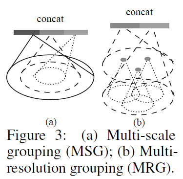
我们提出了两种多尺度融合方式：MSG、MRG。
举个例子，MSG就是分别使用9999个、999个、99个neighborhood所提取到的features作concatenation所得到的features的方式；而MRG就是使用3个99neighborhood接着串联用1个99neighborhood再cancat（并联）直接使用999个neighborhood得到的特征。
效果上MSG慢但是精度高，MRG快但是精度不高。
注意：作者训练时使用了DropPoints（DP）技术（randomly dropping out input points with a randomized probability for each instance），但是model的density variation是否一部分得益于此（data的augmentation）不得而知。
训练流程

对于segmentation，还要对feature插值回原图的分辨率才能对每个点进行分类。
而classification则直接fc+softmax就好了。
KCNet
CVPR2018《Mining Point Cloud Local Structures by Kernel Correlation and Graph Pooling》
paper下载：http://openaccess.thecvf.com/content_cvpr_2018/html/Shen_Mining_Point_Cloud_CVPR_2018_paper.html
概括
作者针对PointNet对local features提取能力弱的缺点（然而PointNet++速度慢），提出使用Kernel Correlation + Graph Pooling的方法来更有效地提取local features。
特点：Kernel的Shape可学习（并且可视化后有直观的几何意义）；不再使用handcrafted的features（如法向量、协方差矩阵）学习了
有益效果：在PointNet的基础上，能有效地提取local features
与PointNet++的比较：同样是局部化的特征提取，KCNet使用的是人为设计的度量函数，而PointNet++是自动提取特征（套用PointNet）；KCNet是对每一个点都提取了local feature，而PointNet++是只对FPS采样出来的点为centroid以及确定的邻域范围内使用PointNet来提取local feature。KCNet中有明显的模板/卷积核概念，而PointNet/PointNet++中没有明显的这一概念。
TODO IDEA：感觉point set的相似度衡量（correlation）过于依赖于选取，是否可能有自动学习这一过程，或者使这一过程更加自然？KCNet实现了Kernel，但是没有对应于stride的东西？是否可以多次地使用这种Kernel Layer而不是只用一次，类似于CNN的叠层使用一样？其中的高斯径向基的$\sigma$是否有自动学习的方法？
难点
如何更加有效地提取local features？
PointNet++是将Point Cloud划分为多个分区，然后各个分区使用PointNet，以实现层次化的特征提取，那么KCNet又能怎么做呢？
PointNet的致命缺陷：PointNet只能感知点的是否存在，而不能编码/表征该点neighborhood的几何结构信息，造成局部描述能力弱。
思想
更加模仿CNN的做法（Learnable的PointSet模板匹配）
具体地说：
- 我们有L个Kernel，每个Kernel有M个点，也就是说一个Kernel是一个point set，并且Kernel里点的位置都是learnable的，这就好比是我们有L个可变形的模板，或者说我们有L个可学习的“卷积核”。然后我们用数学方法人为地构造了一个叫KC(A,B)的度量函数用于度量point set A和point set B的相似程度，值越大越相似。然后这里的point set A就是Kernel，point set B就是我们model输入的point cloud里的其中一个点p的neighborhood的点集，也就是Kernel在整个point cloud上每一个点走过了一遍，因为有L个Kernel，所以一个点会得到一个L维的向量。以上就是Kernel Correlation的含义。
- 然后我们遍历每个点，基于该点的邻居的feature值，每个维度上取max，便是graph max pooling；将邻居的features作算术平均替换掉该点，便是graph average pooling。这就是graph pooling的含义。
额外的Knowledge
- 点云可能不止xyz坐标，或许还包括强度、法向量等信息，构成更高维的描述向量。点云只是描述Object surface的点，无Object内部的点。
- 处理点云的4种主流方法：
- volumetric-based：Volumetric-based approachpartitions the 3D space into regular voxels and apply 3D convolution on the voxels
- patch-based：Patch-based approach parameterizes 3D surface into local patches and apply convolution over these patches
- graph-based：Graph-based approach characterizes point clouds by graphs.
- point-based：Pointbased approach such as PointNet directly operates on point clouds
实现
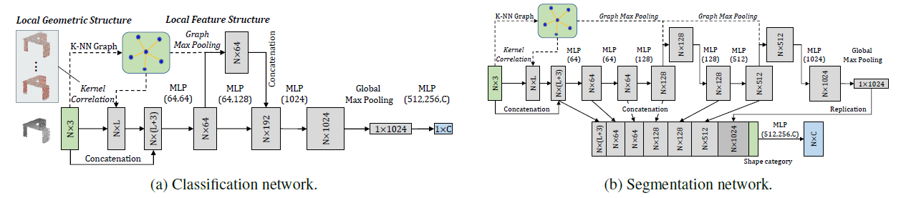
kernel correlation layer（Learning on Local Geometric Structure）
所定义的度量函数为（我将论文的式子换了个形式好看些）：
其中$K$代表Kernel（里面有$M$个点，其中的点用$p_K$表示）；$N$代表点$p$的邻居（不包含点$p$），邻居点记作$p_N$；$|N|$表示点$p$邻居的个数。
其中的$p_N-p$就是表示相对坐标，暗示Kernel应该是以原点为centroid的。
其中$K_\sigma$选用高斯径向基函数，那么最相似时这个$KC(K,p)$的值就是$M$（最大值），最小值就是$0$。
graph-based pooling layer（Learning on Local Feature Structure）
作者借助了一个数据结构，他起名叫“KNNG（K最近邻图）”，用来存储每一个点的邻居是谁，使用KNN算法得出邻居成员。
图结构的Pooling起到了feature aggregation的作用，据作者声称加强了特征的鲁棒性。
Graph max pooling就是neighborhood特征的最大值（各个通道上）
Graph average pooling的直观解释：就是neighborhood特征的算术均值。原文中描述比较复杂，直观地说就是这样：
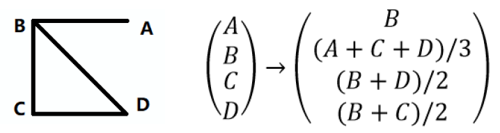
值得注意的是，pooling只是以邻居的特征计算后赋给自己。不知道为什么不算上自己的特征？？
结果
速度快（只比PointNet稍慢），精度还算高（虽然不是最高的）
鲁棒性（随机替换point为噪点）：graph max pooling比graph average pooling更鲁棒；单纯使用graph max pooling比结合着使用graph max pooling + kernel correlation鲁棒性能更好，只使用kernel correlation鲁棒性能最差。
注意：作者训练时没有用data augmentation的方法
SO-Net
CVPR2018《SO-Net: Self-Organizing Network for Point Cloud Analysis》
概括
- 针对一些网络在处理point cloud时的缺点，如：不能对点的空间分布进行建模（例如PointNet++，只是能获取局部信息不能得到局部区域之间的空间关系），提出了SO-Net。SO的含义是利用Self-organizing map的Net。
- 结果：它具有能够对点的空间分布进行建模、层次化特征提取、可调节的感受野范围的优点，并能够用于多种任务如重建、分类、分割等等。取得了相似或超过SOTA的性能，因为可并行化和架构简单使得训练速度很快。
- 贡献：
- We design a permutation invariant network - the SO-Net that explicitly utilizes the spatial distribution of point clouds.
- With point-to-node kNN search on SOM, hierarchical feature extraction is performed with systematically adjustable receptive field overlap（可调节的、感受野之间有交叠）.
- We propose a point cloud autoencoder as pre-training to improve network performance in various tasks.
- Compared with state-of-the-art approaches, similar or better performance is achieved in various applications with significantly faster training speed.
- TODO IDEA：作者发现将CNN直接用于SOM图上性能不升反降，为什么（推测：可能是SOM的2D map并不是保持了原本的空间对应关系，可能nodes之间是乱序的，导致用conv2d时精度反而降低）？
难点
如何对local regions之间的空间关系进行建模？举个例子，即怎么显式地知道region A在region B的左边？
额外的Knowledge
该文Related Work里对点云处理的“综述”比较详尽，怒赞！！！
网上找的SOM简介：【机器学习笔记】自组织映射网络（SOM）
思想
- 点云的空间分布编码：使用SOM中nodes自带的拓扑结构实现
- 交叠感受野且可调：使用“point-to-node kNN search”，使得感受野大概率交叠，并且感受野大小受超参数控制。
- 无序化：使用作者提出改进的SOM即“Permutation Invariant SOM”，使得SOM的result对输入数据的顺序弱化至无。
做法
Permutation Invariant SOM
使用2维的SOM。注意2维的SOM并不是指nodes的features的dimension是2，而是指nodes的拓扑排列是2维正方形地排列。实质上nodes的features的dimension可以是任意维度，当是三维时就好比是学习point cloud的“聚类中心”。
传统SOM不能真正实现对输入数据的顺序不依赖性，需要作出修改：
- Assign fixed initial nodes for any given SOM configuration
- Perform one update after accumulating the effects of all the points.（batch update）
Encoder Architecture
记号：
point cloud（其元素简称point） $P=\{p_i\in \mathbb{R}^3,i=0,…,N-1\}$
SOM nodes（其元素简称node） $S=\{s_j\in \mathbb{R}^3,j=0,…,M-1\}$
point-to-node kNN search
在$S$中寻找$p_i$的k个最近邻：$p_i$的第$k$个邻居记作$s_{ik}$
normalization
将$P$中的点都进行normalization：$p_{ik}=p_i-s_{ik}$
那么每个点$p_i$都有k个被归一化后的版本。一共有N*k个这样被normalization后的点。
shared FC layer（作用：施加非线性，提取point features）
将$p_{ik}$输入一层FC，得到$p_{ik}^1$；若输入$l$层FC层则得到$p_{ik}^l$
shared的意思大概是对于N*k个这样的$p_{ik}$输入的都是同一个FC网络。
构造N*k个$p_{ik}$的用途：
- 提取point features：每一个point都有3个feature vectors
- 形成感受野：每一个node大致有$int(\frac{k N}{M})$个feature vectors。利用这一性质，我们在后面用max pooling操作提取node features。
channel-wise max pooling operation（作用：从point features中提取SOM node features）
注意这里是从MLP尾巴$p_{ik}^l$提取的max pooling。
这里$max()$函数的里面的元素的个数就是感受野的大小，可知感受野大小不是确定的，容易知道感受野大小的期望就是$\frac{k N}{M}$，所以说感受野是可调的，并且存在overlap。
原本$s_j$是3维向量，现在max pooling后额外得到了维度未知的向量$s_j^0$（维度取决于MLP最后一层的输出维度）。
node concatenation：然后可以将两者concat起来得到$[s_j,\;s_j^0]$，feature的维度更长了，融合了不同层次的信息。
注意到“shared FC layer + channel-wise max pooling operation”好比就是一个small PointNet，对“mini point cloud”进行编码。
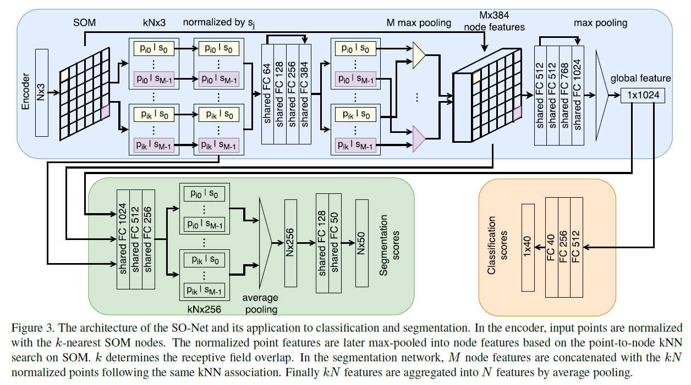
网络结构如上。
总地来说就是，先计算SOM得到$s_j$，然后计算$p_{ik}$，接着将$p_{ik}$输入MLP得到变换后的$p_{ik}^l$，接着对$p_{ik}^l$作max pooling得到$s_j^0$，与原本的cancat使得node features“变长”（在图中表示就是那个网格拥有depth了），接着对SOM nodes作MLP再max pooling得到global feature。
segmentation与classification略去不说。
Autoencoder
In this section, we design a decoder network to recover the input point cloud from the encoded global feature vector.
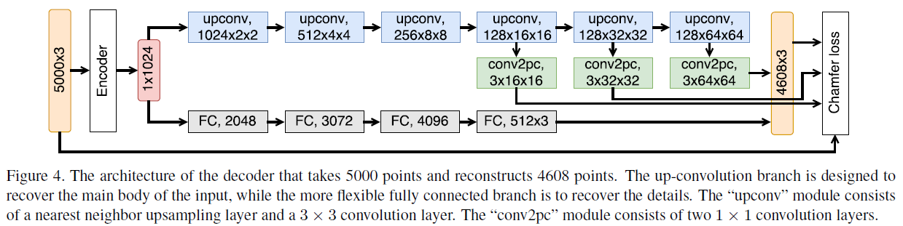
Experiments结果分析
略
Using Local Spectral Graph Convolution
ECCV2018《Local Spectral Graph Convolution for Point Set Feature Learning》
概括
在局部图的区域上使用“图卷积”提取local features（将局部点图的图卷积转换到频域上进行操作），提出了fancy的池化操作（多次使用clustering+pooling进行的池化操作）。
思想
利用图卷积的方式取代PointNet进行local regions的features extraction。
提出使用先划分子区域（clustering）再pooling的池化方法，感觉像是分组卷积的思想？
实现
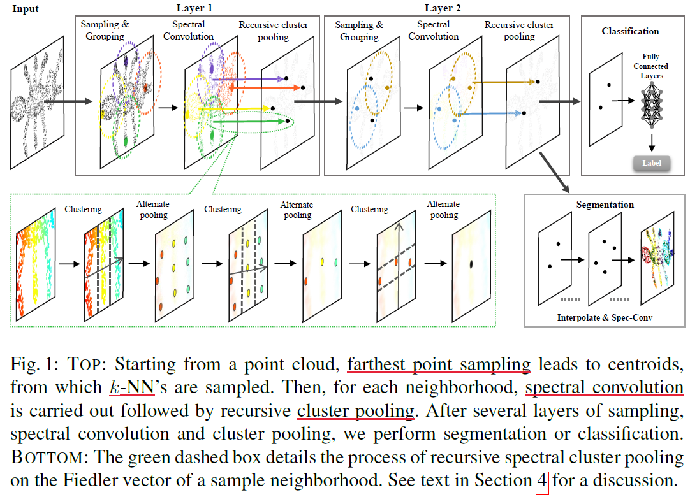
使用FPS计算出centroids，kNN计算出local regions。
接着使用频域的图卷积，以及多次使用clustering+pooling进行池化。
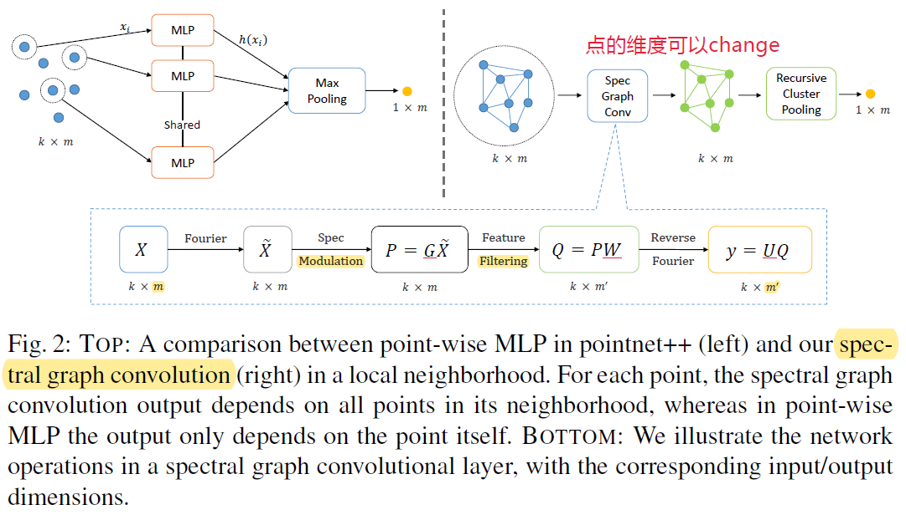
频域图卷积过程如上图所示。
局部点图一共有k个点。其中：
$X$是输入特征矩阵（一共有k行，每一行是该点的特征向量，特征向量维度为m）
$G$是spectral modulation matrix，$W$是weights of the feature filter（好像是图的邻接矩阵？）
图的傅里叶变换：首先计算拉普拉斯矩阵$L=I-D^{-1/2}WD^{-1/2}$，然后对$L$作特征值分解得到特征向量矩阵$U$，那么正傅里叶变换就是$\tilde{X}=U^TX$，反傅里叶变换就是$X=U\tilde{X}$
池化：We partition the Fiedler vector to perform spectral clustering in a local k-NN. We alternate between max pooling and average pooling between different recurrences.
多次重复步骤2，最终获取特征用于分类/分割。
PointCNN
NIPS2018《PointCNN: Convolution On X-Transformed Points》
paper下载：http://papers.nips.cc/paper/7362-pointcnn-convolution-on-x-transformed-points
概括
作者声称提出了一种“generalization of typical CNNs to feature learning from point clouds”，因而称作“PointCNN”（我个人觉得人造痕迹比较多），并且接近/达到了SOTA的性能。
主要流程是：用kNN划分regions，然后对neighborhood的feature matrix进行transform，接着与kernel matrix进行conv；多层这样的“conv层”堆叠，最后得到特征输出。
但是需要注意的是：作者发现矩阵$X$并没有达到“permutation equivalence”的效果；而且作者训练时使用了augmentation的方法，包括shuffle输入数据点的顺序。
这里的“卷积”是真正传统意义上的卷积（元素间按位相乘再相加）；不同于KCNet提出的3D Kernel大法，不同于图结构的谱图卷积等等。
思想
想直接弄个conv类似的linear conv kernel，发现conv对输入数据的order sensitivity。于是想办法“纠正”输入数据的order，本想用“Permutation matrix”乘以它就好了，可能是ideal的Permutation matrix很难弄到，所以提出弄了个矩阵$X$，美言称能实现“simultaneously weight and permute the input features”，然后实在不知道怎么弄了，就让矩阵$X$自己从输入点集的坐标里学习吧（使用MLP），然后甚至还将点集坐标nonlinear transform后cancat进原本的features。最后施加矩阵$X$，最后卷积。
原理
传统卷积（暂不考虑kernel的滑动，只考虑在一个location上）可以表示为（这里的conv实际上是matrices间element-wise的product，最后sum）：
其中$K$表示卷积核，$f_a$等表示像素的特征向量（横向量，$f_a\in \mathbb{R}^{C_1}$）。上式表示2*2的kernel在一个location上的computation。
推广开来，在点云上，假设有4个points，然后做“卷积”，式子跟上面是一样的。但是对点云的输入顺序敏感，即$[f_a,f_b,f_c,f_d]^T$与$[f_b,f_a,f_c,f_d]^T$的结果会不一样，所以我们需要对它进行transform再输进去。我们这里选择用一个矩阵$X$与它相乘（矩阵有“置换矩阵”可以实现对输入顺序的矫正，推广到一般矩阵则相当于“置换+加权”的效果）。即：
这个矩阵$X$是由输入数据通过MLP生成的。
在PointCNN中，一次computation（只在一个location上，不“滑动”）的过程就是：
其中$K$是kernel matrix，$P$是输入点集的空间坐标（在region中，如果kernel覆盖了4个点，那么$P$的元素个数就是4），$p$是输出点的空间坐标（类似于该region的centroid，只有一个，$p\in P$），$F$是输入点集的feature matrix（与$P$的元素个数相同），$MLP()$和$MLP_\delta()$是多层感知机函数。
handcrafted的流程解释：
转化到相对坐标系中$P-p$
矩阵$X$通过输入点集的空间坐标学习得来：$X=MLP(P-p)$
- 将输入点集维度升高，并与点集的特征向量进行cancat，作为最终的特征向量：$[MLP_\delta(P-p),F]$
- 进行“置换+加权”：$MLP(P-p) \times [MLP_\delta(P-p),F]$
- 最后进行常规的卷积操作得到$f$
实现
Hierarchical Convolution
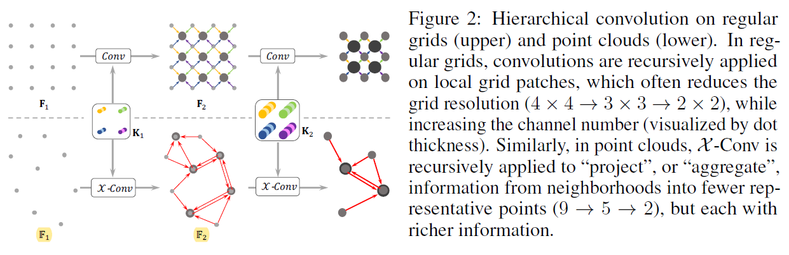
模拟CNN，作者对图结构进行information的aggregation。
X-Conv Operator
作者的卷积结构称作“X-Conv”。我觉得直接从点云坐标学习得到矩阵$X$似乎是个很难的任务，感觉$X$矩阵并没有达到预期目的。
PointCNN Architectures
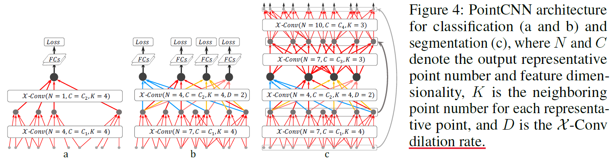
通过多层的堆叠实现特征提取。
A-CNN
CVPR2019《A-CNN: Annularly Convolutional Neural Networks on Point Clouds》
概括
使用循环卷积作为点云的特征提取方式：对点集投射到2D平面上进行圆周排序再输入到循环卷积中提取特征，输出的点的数量是上一级的centroids数量，多级嵌套实现“层次化”特征提取。
效果：提取局部几何结构特征（感觉是很明显的人工设计流程），adapt to the geometric variability and scalability at the signal processing level（文中没论述，不知道怎么看出来的），超过了SOTA（其实只是部分指标超过了SOTA）
BTW，文章Related Work部分的综述部分写的不错
TODO IDEA：为什么基本都需要kNN，可以不用吗？是否可以以平面极坐标的形式对投影p_j进行了排序后进行输入，而不需要划分ring再cos angle sort？？或者多个rings的特征组成更高维的tensor再滑动卷积？
思想
其实Annular Convolution的整个目的是为了实现neighborhood的无序化。在同一个ring上的确实现了无序化（从3D space project到2D plane，然后用angle的方式一一映射到1D line，最后使用1D circular convolution即可实现邻域特征的融合；同时ring的半径对应了感受野）
模仿PCA将points变动最大的方向保留（向切平面投影），感知centroid在距离远近上的特征（例如城市的内环特征、中环特征、外环特征分别是繁荣、住宅区、郊区这样子；再将这些“环”特征concat起来，作为这座城市的特征），而在“环”区域里面的顺序则是通过余弦角排序后输入循环卷积里面实现的（思路不错！）
主要创新点：将邻居点投射到2D平面上，然后对2D平面划分出多个不重叠的区域（它是同心圆环区域），然后指定一个标准点，与其计算余弦夹角后排序，从而得到点的圆周顺序排列，输入到循环卷积中提取特征；不同同心圆环的特征concat起来，再在所有邻居点之间作max pooling。
实现
Regular and Dilated Rings on Point Clouds And Constraint based KNN Search
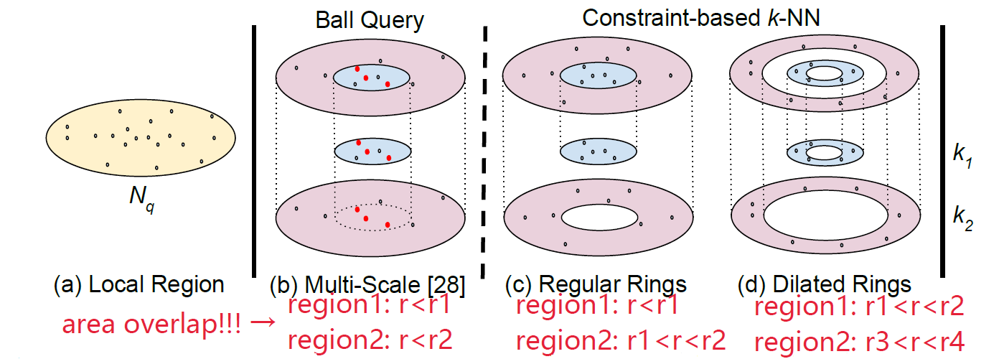
将平面空间划分为不重叠的区域，不重叠会减少计算量和避免特征冗余。如果是普通的ball query则大的感受野必然会包含小的感受野。作者使用环形的方式，甚至模拟空洞卷积使用带间隔空环的方式划分平面区域（增大了感受野）。最上面的圆形平面代表平面区域划分，中间和最下面的平面代表将最上面的解体开给你看的，说明没有作者提出的划分方式（Rings）没有重叠。
Constraint based KNN Search：只是将区域受限，进行的KNN算法。例如原本是$r<R$范围内的，现在可能是$R_1<r<R_2$范围内的。
centroid使用FPS最远点采样算法获得，邻居使用Constraint based KNN Search获得。
做完这一步我们就可以得到多个centroid和其对应的neighborhood了（区域划分完成）。
Ordering Neighbors
Normal Estimation on Point Clouds
首先估计centroid的法向量：首先沿着法向量，邻居的位置变化肯定是最小的。所以法向量就是邻居点的相对坐标的协方差矩阵最小的特征值所对的特征向量的方向。
似乎法向的方向颠倒之后得到的排序后的点的顺序也会相反，但好像只要使得法向始终与某一方向的夹角小于90°就好了？？？
有了法向量就可以估计切平面。
Orthogonal Projection
将邻居点向切平面投影，得到位于切平面上的投影点$p_j,k\in\{1,…,K\}$。
Counterclockwise Ordering
随便指定一个投影点作为参考点，例如就选$p_1$吧。记centroid为$q$。
那么以此计算$p_j-q$与$p_1-q$夹角的“余弦值”（借助叉积可以辨别是位于圆的上半部分还是下半部分，从而可以拓展到0~360°的识别范围，所以“余弦值”被我们拓展到$(-3,1]$的区间上了），将“余弦值”降序排列，那么就能对邻居点实现逆时针的排序了
Annular Convolution on Rings And Pooling on Rings
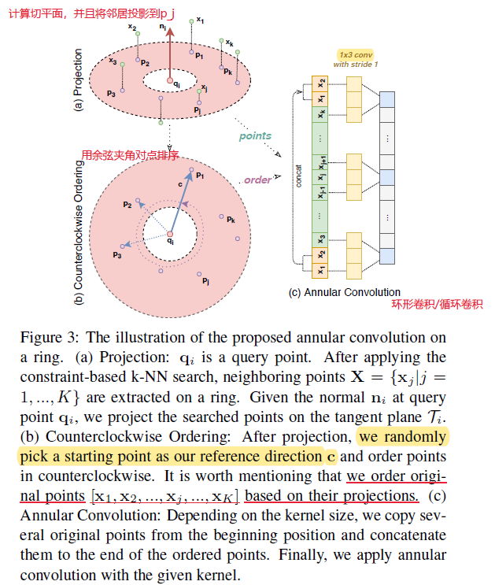
将排序后的邻居点$[x_1,x_2,…,x_K]$输入到循环卷积里进行特征提取。
如果卷积核的大小是3，那么循环卷积相当于对$[x_1,x_2,…,x_K,x_1,x_2]$进行卷积核为3的普通卷积。
因为采用了循环卷积，所以参考点（$p_1$）到底是谁就不重要了。
将不同rings的特征concat，然后在所有邻居点之间做maxpooling。然后再把得到的东西再次送入类似的结构作“层次化提取”。
A-CNN Architecture
整体结构如下：
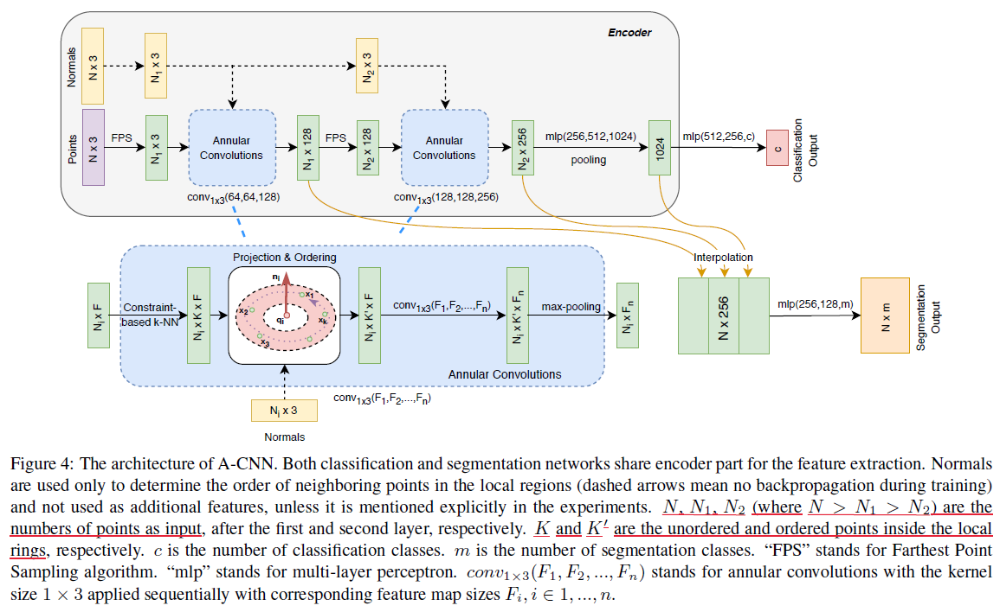
它的Segmentation Network上采样插值部分与之前某个网络有点类似（The interpolation method is based on the inverse squared Euclidean distance weighted average of the three nearest neighbors），不再详述。
PointConv 👍
CVPR2019《PointConv: Deep Convolutional Networks on 3D Point Clouds》
概括
这篇文章将卷积比较自然地拓展到点云的情形，思路很赞！
文章的主要创新点：“weight function”和“density function”，并能实现translation-invariance和permutation-invariance，可以实现层级化特征提取，而且能自然推广到其deconvolution的情形实现分割，在二维CIFAR-10图像分类任务中精度堪比CNN（表明能够充分近似卷积网络），达到了SOTA的性能。
缺点：每个kernel都需要由“kernel function”生成，而“kernel function”实质上是一个CNN网络，计算量比较大。
思想
察觉到：二维卷积中pixel的相对centroid位置与kernel vector的生成方式有关。
以二维卷积为例说明一下如何将卷积拓展到点云。这里只考虑使用一个kernel在一个location的一次卷积操作。
对于二维图像，我们可以将图像的pixels看作是一个点，那么图像就是整齐排列的点阵。每个point都有维度为$C_{in}$的特征向量（相当于图片是多通道的，一个通道对应于特征向量里的一个位置）。在二维卷积中，我们的kernel是“滑动”的，即我们在多个location的计算中共用一个kernel参数。这是为什么呢？我们如果认为这种共享参数的形式得益于整齐排列的points，那么这就是我们的PointConv的出发点了。
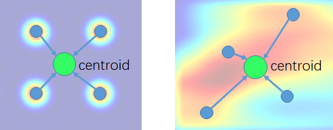
现在我们考虑一个point位置上的kernel是什么，在传统2D卷积中，这个值就是一个vector（$C_{in}$尺寸），如果points是正方形（2*2）整齐排列，那么我们可以认为kernel是$2\times2\times C_{in}$的尺寸。但是我们现在不这么认为，我们认为kernel的尺寸是$K\times C_{in}$（其中$K$是输入点的个数，这里是4），这样有助于推广到点云的情形。
在2D图像中，我们不妨可以认为kernel是这样生成的：kernel在一个point上的值（vector），取决于point的位置。那么在2D图像中，这个生成vector的分布，则是4点的狄拉克分布，即在空间坐标中只在这4个位置下，才有对应的向量值。
我们推广开来，假设这个分布是实数值的连续分布，不妨叫它做“weight function”，那么在3D点云中，这个“weight function”的输入是3D坐标系x、y和z，它的输出则是一个vector（尺寸$C_{in}$）。（在2D图像中，则$[f(0,0),f(1,0);f(0,1),f(1,1)]$组成了我们三维的kernel，尺寸$2\times2\times C_{in}$）。如果点的坐标是实数值（3D点云中其实就是实数值），那么我们点云的kernel尺寸就是$4\times C_{in}$，即我们每个point都有一个vector kernel与它对应。我们的计算过程就是：每个point的的feature与kernel vector做点积，最后把所有邻居点的点积的结果求和，得到的scalar就是我们一次卷积计算后的结果。
如果每个point的位置上是一个矩阵，那么相当于有多个kernel，最后得到的卷积结果不是scalar而是一个vector（有点像2D卷积中有多个卷积核的情形，输出就形成了多个channels）。
实现
PointConv
在邻居点中实现卷积：
其中$W\in\mathbb{R}^{K\times(C_{in}\times C_{out})}$是$C_{out}$个kernel，$F_{in} \in \mathbb{R}^{K\times C_{in}}$是邻居的特征矩阵（一行一个），$S$是点密度的修正项（density scale），$F_{out}$是卷积后输出的vector。其中的kernel由“kernel function”生成，而“kernel function”接收x、y和z坐标输入，然后通过2D卷积（用1x1卷积核），得到一个尺寸为$K\times C_{in}\times C_{out}$的tensor，就是$W$。输出的$F_{out}$的空间坐标就是centroid的坐标。
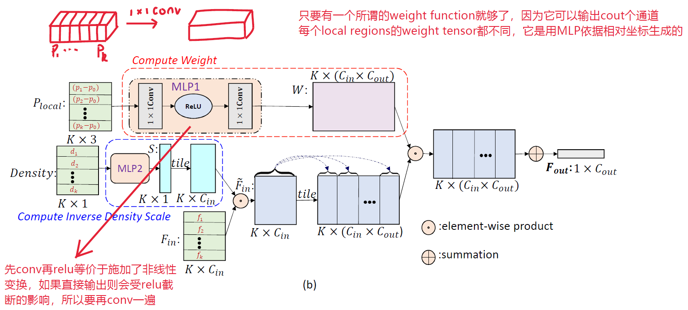
关于密度：作者首先使用“kernel density estimation”算法估计每一个点的密度，然后将得到的密度（一个点的密度是一个实数值，有$K$个点所以是一个1d vector）丢进MLP里非线性变换（丢进MLP里是为了让网络自己决定是否采用密度估计），估计密度是为了解决点云的非均匀采样导致的非均匀密度的问题。
作者发现原始版本的PointConv实现内存占用太大，提出了改进版本，在此不详述。
PointDeconv其实就是邻域3点线性插值上采样，与前面同级的特征concat，再使用PointConv。
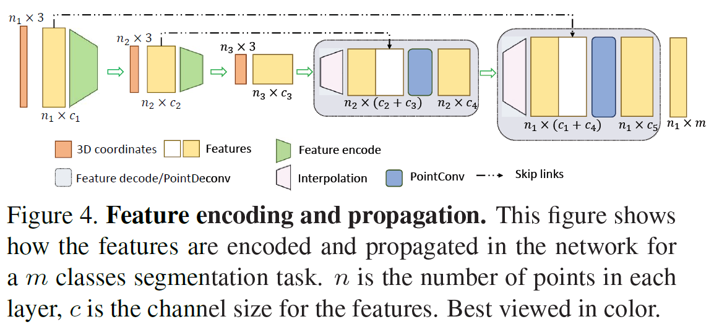
上图是用于segmentation的pointconv网络。特征提取的过程好像也是先用FPS采样再grouping的。
KPConv👍
ICCV2019《KPConv: Flexible and Deformable Convolution for Point Clouds》
概括
与“PointConv”和“KCNet”稍微有点类似，它也是将卷积自然推广到3D point cloud中，但是区别是生成kernel transform matrix的方式不一样，而且它的point kernel并不是用于直接度量点云之间的相似度而是用于建立分布来计算kernel transform matrix的值。简单地说是通过线性插值来得到矩阵的，而系数与点之间的距离相关。
效果：达到SOTA，可分类又可分割
注：
KPConv == Kernel Point Convolution
我这里的kernel transform matrix指的是给定一个邻域内的点$y_i$（相对坐标），通过某一种方法得到该点相关联的特征向量$f_i$的转换矩阵$W$，其$W$就是kernel transform matrix。在一个位置上的卷积计算过程就是$output = \sum_i W_i y_i$，即：
TODO IDEA：还有没有其他方法来生成这个分布？找邻居的方法是否可以更加自然一点，使得嵌入神经网络的架构中？
思想
与“PointConv”类似，区别是它生成kernel transform matrix的方式不一样。在前篇”PointConv”中，生成方式是使用CNN合成，输入xyz坐标自动生成一个矩阵。在这篇“KPConv”则是利用类似于插值或者说平滑的方法来计算kernel transform matrix。
那么这个“插值”的算法是怎么计算的呢？这套算法需要我们首先定义一个小点云，小点云里面有$K$个点（$K$是任意的，可以不等于邻域内的邻居数，$K$越大则描述的分布越精细），而小点云里的每个点$d_k$都有个矩阵$W_k$与之关联。现在我们考虑输入点云的centroid的邻域内的一个邻居点$x$，那么计算得到的矩阵则是在小点云周围点的矩阵$W_k$的线性表示：
其中的：
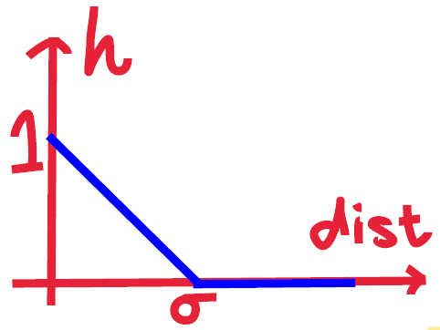
意思是这个分布实质上只是由$K$个“狄拉克分布”支撑起来的，只有在这$K$个地方才有真正的值。想要获取其他地方的值就只能通过线性插值得到。线性插值的“原子”则是与之离得比较近的点所对应的矩阵$W_k$，离得太远则会由于ReLU函数的截断性质而不再作出贡献。
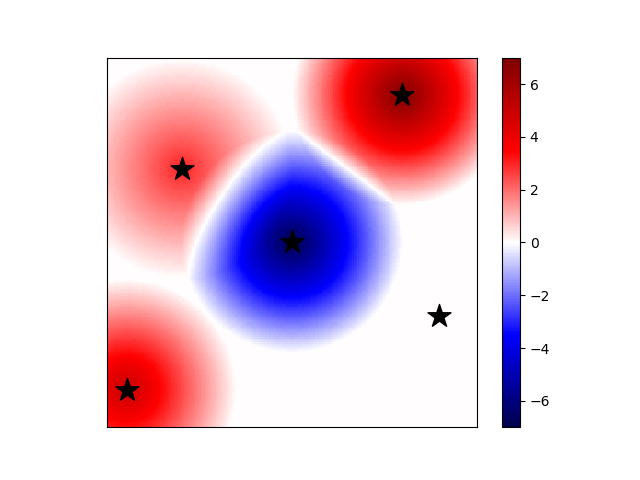
上图是假设kernel points只有5个，黑色星星的位置是kernel points的位置，假设weight matrix只是一个scalar，使用KPConv的插值算法得到的分布图。画图的代码见这里。可以看出这个算法的效果就是：相当于允许邻居点neighbor point的位置有稍微的变动，其理想的等值面是一个球形，在波动允许的范围内则使用一个接近的transform matrix值，而没有受到影响的地方则默认是零。这样带来的好处可能是使得分布平滑（猜的），使用CNN生成的方式应该不能保证分布平滑（瞎猜的）。
实现
Rigid or Deformable Kernel
在“思想”中介绍的就是Rigid Kernel，意思是kernel point的位置一开始就是固定好的，是不可改变、不可学习的参数，改变的只能是其小点云上的矩阵$W_k$。Rigid Kernel的初始化方式形象地说就是假想每个kernel point都是带正电的小球相互排斥，但是同时要使得小球被束缚在一个半径尽可能小的包围球里面，包围住全部的带点小球，那么最终稳态时的小球位置就是kernel point的坐标位置。
Deformable Kernel并不是指kernel point的位置可变，然后最后共用同一个分布，因为这样没什么意义，还不如选用好的初始化方法。
而Deformable Kernel则参照了二维图像中的deformable convolution的实现方法，就是在Rigid Kernel的基础上学习一个kernel point shift的量，在固定的基础上进行变动，从而实现这$K$个“狄拉克分布”的位置都是可变的。
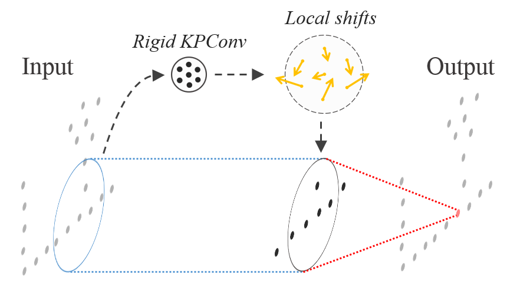
在使用Deformable Kernel的时候，需要在损失函数上加上正则项，用来约束kernel point和neighbor point不能离太远、kernel points之间不能太近，否则效果奇差。
网络结构
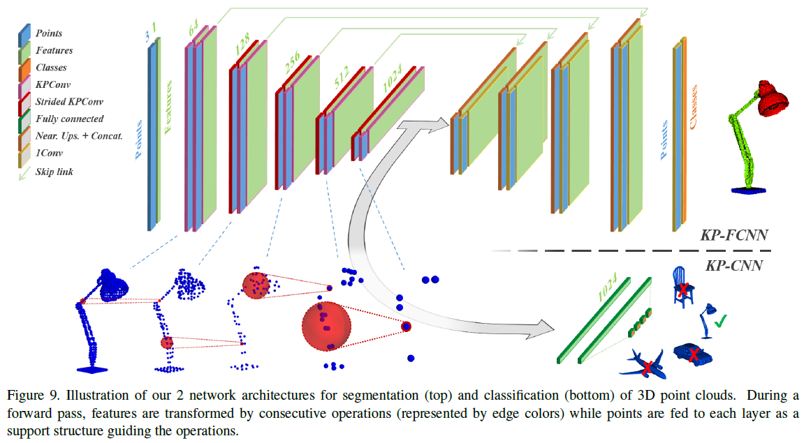
用grid subsampling下采样，用max-pooling或KPConv来做pooling
用radius neighborhoods而不是k-nearest-neighbors
DGCNN using EdgeConv👍
TOG2019？《Dynamic Graph CNN for Learning on Point Clouds》
paper下载：https://arxiv.org/abs/1801.07829
概括
将传统卷积以另一种视角拓展到点云中来，称作EdgeConv。由EdgeConv组成的网络叫DGCNN。因为EdgeConv的图是动态计算的，所以其神经网络叫做Dynamic Graph CNN (DGCNN)。使用EdgeConv具有以下特点：聚合局部几何信息、EdgeConv模块可以级联使用、语义的长距离感知。并且达到了SOTA。
EdgeConv： EdgeConv能捕获局部几何结构，并且顺序无关。EdgeConv通过生成描述点与点之间的“边特征”（edge feature）来进行卷积计算。每当前向传播时，KNN图都会被再次计算（因为特征向量被改变，导致邻居也会变），称之为Dynamic Graph。
其本质上是使用graph结构vertex之间的connectivity关系，实现information通过edge来与vertex交互更新。
EdgeConv与PointConv的异同大概是：
- PointConv中，neighborhood与centroid的空间相对关系编码在distribution中；neighborhood transform也是编码在distribution中。信息传递显式地通过distribution的超距作用来交互。
- EdgeConv中，neighborhood与centroid的空间相对关系编码在由MLP实现的$h(\cdot,\cdot)$中；neighborhood transform也是编码在由MLP实现的$h(\cdot,\cdot)$中。信息传递显式地依靠连通的edge来交互。
TODO IDEA：能否不用KNN图？能否逐步减少点的数量？
思想
首先，有一个图$G$，它的每个顶点上有一个feature。下图是点$x_i$的KNN图。
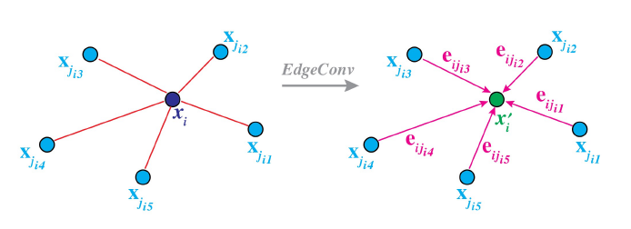
然后我们利用“点特征”计算“边特征”：设这条边相邻的两个顶点的特征分别为$x_i$和$x_j$，那么“边特征”：（其中$h(\cdot,\cdot )$采用MLP实现）
每个边都由此计算得到它的边特征了（注：边的集合记作$\mathcal{E}$），现在我们利用“边特征”更新得到输出的“点特征”：
其中$x_i$（全局坐标）的输入变量编码了global shape structure，$x_j-x_i$（相对坐标）编码了local neighborhood information。
其中要求$h(\cdot,\cdot)$函数$\mathbb{R}^F \times \mathbb{R}^F \rightarrow \mathbb{R}^{F^{‘}}$是非线性函数，聚合操作$\max$可以是任何的对称操作符（例如$\sum$也可以）。不难知道，当$h(\cdot,\cdot)$函数是$h(x_i,x_j)=\theta_{j \; relative \; to \;i} x_j$时，聚合操作是$\sum$时，就化成普通的卷积了。
实现
Edge Convolution
“思想”中的方法就是Edge Convolution的实现方式。
值得注意的是，经过Edge Convolution处理后，点的数量不变，可改变的只能是该点特征向量的维度。
性质：Permutation Invariance、“partial” translation invariance
Dynamic graph update
假设有两个Edge Convolution模块，输入特征维度是3，处理后的维度是64，再次处理后的维度是128。那么Dynamic graph update的意思是指：对3维的point cloud计算KNN图$G_1$，第一个EdgeConv根据$G_1$计算得到64维的输出。对64维的point cloud再次计算KNN图$G_2$（这次是在64维的空间中），然后第二个EdgeConv依据$G_2$计算得到128维的输出。以此类推。
所以动态图计算有助于算法自动构建合适的图结构来帮助优化问题。
实现
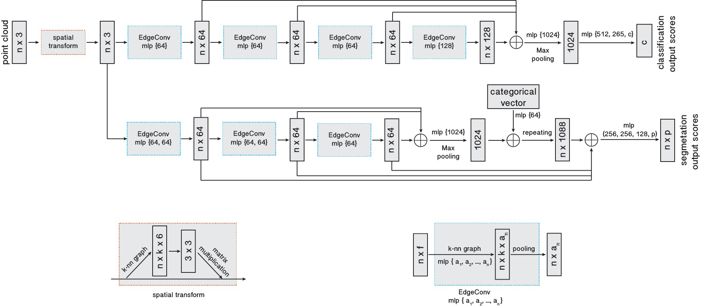
注释：
- $\bigoplus$是concat算符。
- n是点云的点数，k是对于一个点的邻居数
- 图的上方分别是classification network和segmentation network。
- 左下角的网络起到类似于PointNet中的T-Net的作用，即align an input point set to a canonical space
- 右下角就是EdgeConv模块的实现方式。$h(\cdot,\cdot)$函数采用MLP实现，MLP的第$i$层的结点数记作$a_i$，输出的结点数为$a_n$（这里的n并不是指点云中点的数目）。pooling操作意指在k个邻居中max pooling。
效果
不同层级提取到的特征（从左到右依次层级递增），通过指定一个点（红色点），然后计算其他点在该层级中与红点的距离来可视化，距离越近（代表在KNN图中是比较相邻的顶点）颜色越黄。可见该算法可以提取比较长距离的特征。
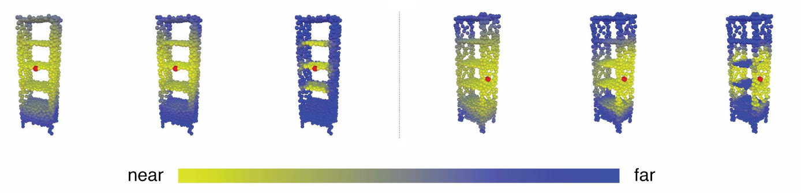
Mo-Net
？？？《Mo-Net: Flavor the Moments in Learning to Classify Shapes》
paper下载：https://arxiv.org/abs/1812.07431
概括
提出使用几何矩的方式来提升输入点云的维度（$\mathbb{R}^3 \rightarrow \mathbb{R}^9 $），以捕获更多信息，在降低计算复杂度和内存消耗的同时提升精度。
注意：这篇paper主要是与PointNet相对比的；讨论的是点云的classification问题。
实现
注意，这里的MLP是shared的，只有一个MLP网络。
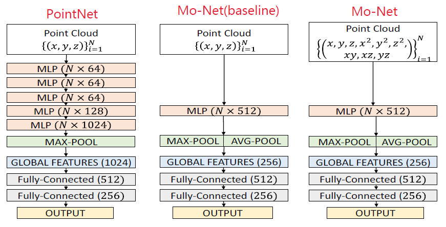
使用几何矩
点云原本的输入是$(x,y,z)$，现在变成了$(x,y,z,x^2,y^2,z^2,xy,yz,xz)$
双重池化
将max pooing与avg pooling的结果进行concat
效果
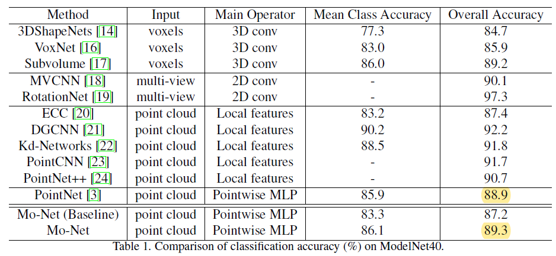
比PointNet的精度稍微高上一点点
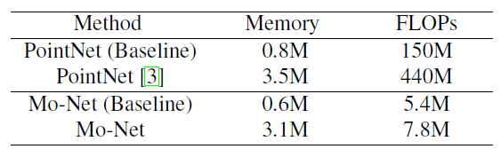
MLP的层数可以大大减少，使得计算复杂度降低，内存消耗量降低
Tangent Convolutions
CVPR2018《Tangent Convolutions for Dense Prediction in 3D》
概括
提出了“Tangent Convolutions”，它本质是切平面上的卷积。将对point cloud feature的卷积转变为对image的卷积。
优点：适用于大规模场景（数百万个points）、在大规模场景可以precomputation一部分、在大规模场景中达到SOTA。
思想
将3D point cloud卷积转化/投射到2D平面的卷积。
即：将3D的$\sum_{q\in Neighborhood} point_feature(q)^T vector_kernel(q)$卷积转换到2D的平面卷积（卷积核等于输入图的大小，不滑动）
将邻居点project到切平面上，通过插值的方式产生位于切平面上的tangent image，然后使用平面卷积来卷积tangent image。
tangent image编码了局部的空间几何关系、以及原本作用在点云中的特征提取操作$F(q) $，现在对其平面卷积相当于对空间几何关系的operation、以及对$F(q) $的convolution。
实现
Tangent Convolution
不仅是点云，只要3D data支持法向量估计（例如mesh），就能使用“Tangent Convolution”
Notation：
- 点云$\mathcal{P}=\{p\}$
- 定义在点云$\mathcal{P}$上的函数$F(p)$（它可以描述该point的颜色/几何/或者其他任何特征）
- 点$p$的tangent plane $\pi_p$
- continuous tangent image $S(u)$，其中$u$是tangent plane上的任意一点（可以不是投影点）
Motivation：
- 将离散定义域的$F(p)$连续化，才能对$F(p)$卷积
Method：
给定点云中的一个点$p$，用$||q-p||<R$的方法选定其邻居$q$，用特征分解的方法来估计法向量$n_p$
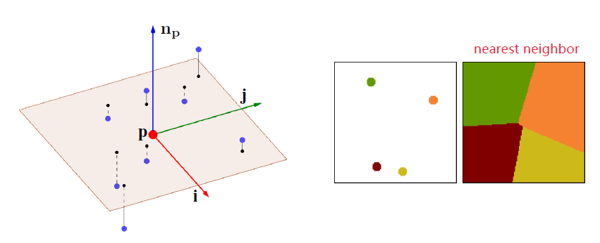
将邻居$q$投射到切平面得到投影点$v$（其集合记作$V$，注意$p \notin V$），我们规定$S(v)=F(q)$（即在某几个离散位置值相等），然后其他位置使用插值的方法得到，我们使用最近邻插值：
其中$g_{plane}(u)$表示从$V=\{v\}$中选出与$u$最近的点，$g_{cloud}(u)$表示$g_{plane}(u)$在点云中原本的点
在平面上原本只有几个离散的位置有值（几个狄拉克分布），现在被插值到整个平面上都有值了。
那么在平面$\pi_p $上的卷积就是：（$p$生成$\pi_p $，所以讨论$X(p)$）
其中$c(u)$是卷积核。其中$g_{cloud}(u)$这项仅与点云有关，可以事先被计算。
实际上处理时，tangent image被处理成$l \times l$大小的2D网格图像。那么$u$相当于像素，$c(u)$相当于一个与tangent image同大小的卷积核。
Implement a convolutional layer using tangent convolutions
不能算是真正意义上的“卷积层”，只能算是一个module吧
效果：点的数量不变，但是点的特征的维度改变
Notation：
the number of points in point cloud: $N$
input feature map: $F_{in}$ of size $N \times C_{in}$
weight/flatten kernel: $W$ of size $1 \times L$（应该是有$C_{out}$个，尺寸应该是$C_{in}\times L\times 1$）
output feature map: $F_{out}$ of size $N \times C_{out}$
flatten the tangent image or kernel to 1D size: $L=l^2$
Implement：
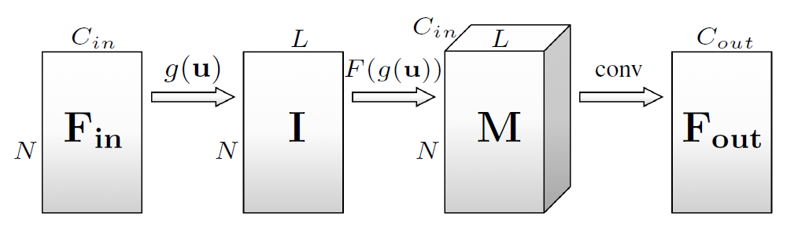
- 预计算$g_{cloud}(u) $函数：对于每个来自point cloud中的点$p$，都对应了一副tangent image $S(u)$；对于每个$u\in Grid(l \times l)$，都计算一次$g_{cloud}(u) $的值。于是形成了index matrix$I$（shape: $N \times L$），记录的是点云中点的索引。
- 使用$F_{in}$矩阵将索引拓展开，得到tensor $M$，即每个点云中的点的索引值都被检索成其输入feature。$F(\cdot)$函数的作用是从点获取点的特征（from index to $C_{in}$ dimension feature），所以相当于作用了$F(\cdot)$函数。举例：point index为3，通过$F_{in}$查到$F_{in}(3,:)$的feature，相当于把$1$长度展开成$C_{in}$长度。
- 用$C_{out}$个卷积核$W$卷积$M$得到输出$F_{out} $
Additional Ingredients
pooling：采用划分3D grid的方法，落在同一个grid的，坐标平均，特征向量平均
unpooling：将聚合点平均拷贝给其他落在同一个grid的点
Local distance feature：也要将邻居点$q$到切平面$\pi_{p} $的距离cancat到$q$的特征里
Architecture
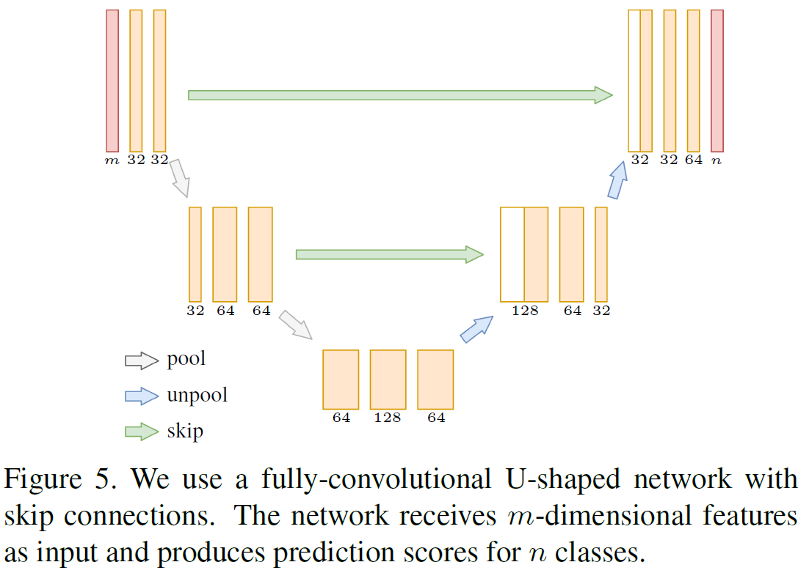
其中的卷积使用tangent convolution，pooling和unpooling采用Additional Ingredients提及的方法。
Mixture Model Networks（MoNet）👍
CVPR2017《Geometric Deep Learning on Graphs and Manifolds Using Mixture Model CNNs》
概括
在非欧结构数据（non-Euclidean structured data）的几何深度学习（geometric deep learning）问题上，提出了在空间域上将传统CNN泛化到非欧几何数据（如graph、manifold）的统一的框架（MoNet），使得以往的模型设计都只是此框架内的特例，并且达到SOTA的效果。
此外本文还粗略地介绍了“Deep learning on graphs”（如Spectral CNN、Smooth Spectral CNN、Chebyshev Spectral CNN （ChebNet）、Graph convolutional network （GCN）、Diffusion CNN （DCNN））和“Deep learning on manifolds”（如Geodesic CNN （GCNN）、Anisotropic CNN （ACNN））
注：MoNet == mixture model networks
关键词：流形、图结构（graphs in the spectral domain）
其他：
- spectral CNN 只能适用于该图本身，不能迁移到其他图（domain-dependent）中使用。因为它的basis不同
- 基于空间域方法的优点是可以泛化到其他domain中去
- 本文提出的方法在manifold和graph上进行统一，有统一的解释性
实现
Notation:
- a point on a manifold or a vertex of a graph： $x$
- a neighborhood of point $x$： $y\in \mathcal{N(x)}$
- d-dimensional vector of pseudo-coordinates： $u(x,y)$（可以粗略理解为相对坐标，或$e_{ij}$上的d维向量）
- weighting functions： $w_1(u),\;w_2(u),\;…,\;w_J(u)$（each function with some learnable parameters）
- get feature function： $f(y)$（获取该点的feature vector）
The patch operator can therefore be written in the following general form（若$f(y)$是vector则计算结果也是vector，因为$w_j(u) $是一个scalar），这一步可以理解为“有J种聚合邻域信息的方式”：
A spatial generalization of the convolution on non-Euclidean domains is then given by a template-matching procedure of the form：（$g_j$是scalar，$(f*g)(x)$的输出类型与$D_j(x)f$相同），这一步可以i理解为“将这J种聚合到的信息进行线性加权”
所以关键问题是如何选取权重函数$w(u)$和伪坐标$u$。其中$w_j(u)$我们选用高斯函数（$\mathbb{R}^d \rightarrow \mathbb{R}$），因此可以理解为gaussian mixture model（GMM），即：
注意到，很多方法都能纳入这个框架，只需选取不同的$u(x,y)$和$w_j(u)$：
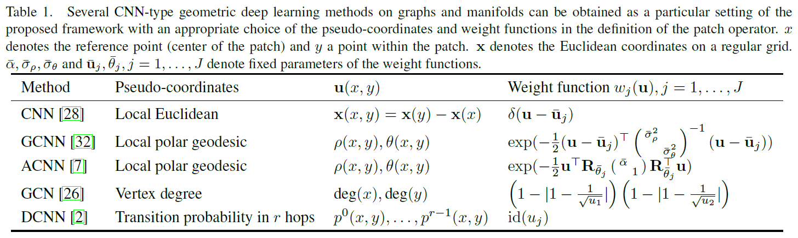
以CNN为例，假设在一个位置上的卷积，$3\times3$大小的卷积核，灰度图，则weight functions需要9个：$w_j(u)=\delta(u-\bar{u}_j),\quad j=1…,$9，其中$\bar{u}_1=(-1,1),\;\bar{u}_2=(0,1),\;\bar{u}_3=(1,1),\;…,\;\bar{u}_9=(0,0)$是kernel所覆盖点的相对坐标。则$D(x)f$是一个9维向量，所使用的卷积核$g$也是9维向量，两者进行内积则产生了一个scalar。
而且不难注意到，The patch operator公式就是KPConv中所用点卷积的泛化形式，将：
泛化成：